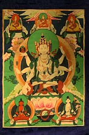

<p>
    <span style="font-size:12px">
        Ушнишавиджая, в Тибете ее знают как, Намгьялма, иногда ее могут называть просто Виджая что в переводе с санскрита означает &laquo;победа&raquo;. Ушнишавиджая это богиня бодхисаттва долгой жизни, которая пребывает на &quot;ушнише&quot; Будды.<br />
        Ушнишавиджая изображается молодой и грациозной, она восседает на лотосовом троне и носит украшения бодхисаттвы. Мы видим на её голове корону с изображением Будды Вайрочаны. У неё белое тело, три лица и восемь рук. Центральное лицо мирное, правое жёлтого цвета со следами гнева, а левое лицо синего цвета гневное. На каждом лице у неё три глаза.<br />
        В правой руке у груди она держит вишваваджру, а в верхней правой руке она держит небольшое мукти Будды Амитабхи, в её центральной правой руке мы видим стрелу, а в нижняя правая рука повёрнута ладонью вверх в дарующей благо мудре. Левая рука что у груди она держит лассо, верхняя левая рука сложена в мудре защиты, а центральная левая рука держит лук, при этом нижняя правая удерживает сосуд с амритой - нектаром бессмертия.<br />
        Ушнишавиджая является иидамом или главным божеством девятичастной мандалы, входит в &quot;садхану продления жизни&quot; наряду с Буддой Амитаюсом и Белой Тарой, что обозначено &quot;сосудом с нектаром&quot; в восьмой левой руке.<br />
        В садханах тибетского буддизма Ушнишавиджая стоит в одном ряду Будды Амитаюса или Белой Тары. Её практики особенно эффективны для предоления препятствий к долгой жизни, для действенного очищения результатов неблагих деяний тела, речи и ума, и для помощи всем живым существам страдающим тяжёлыми заболеваниями. Ушнишавиджая защищает от восьми видов страха, а также от перерождения в нижних мирах. Считается что благо от повторения мантры ее так велико, что ее защита будет как в этой, так и в следующих жизнях.
    </span>
</p>
